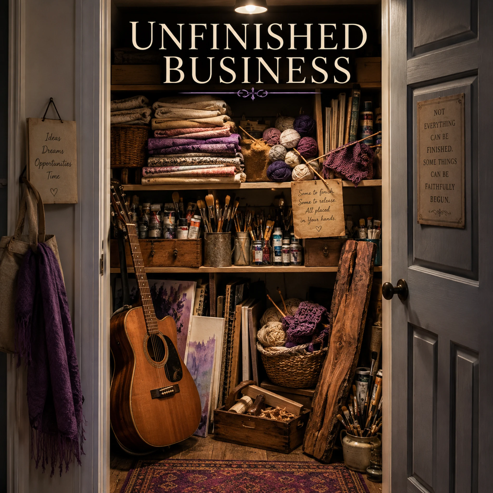
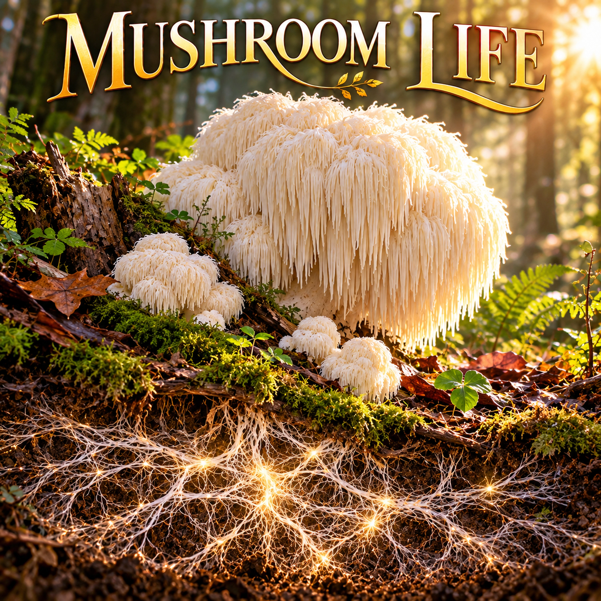
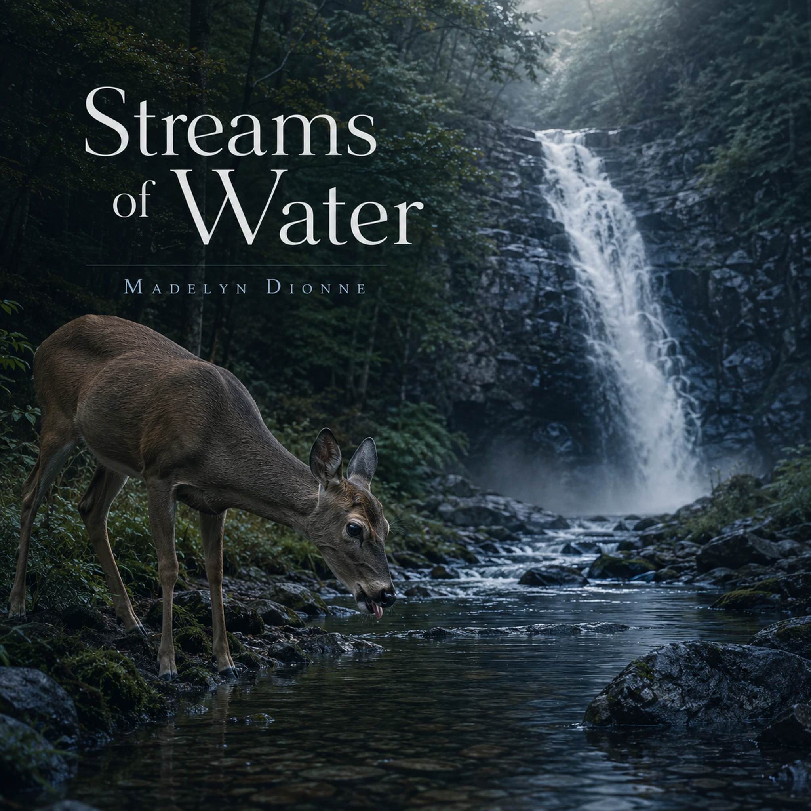

Perfect Pearl*
Devotional · Encouragement, Testimony & Sharing Christ

These songs begin with ordinary things—water, mirrors, seeds, roads, waiting, memory, work, questions—and follow them toward the spiritual truths they suggest.
Some songs are quiet. Some are playful. Some are deeply personal. Each one is paired with a devotional and Scripture references so you can listen, reflect, and then return to God’s Word for yourself.
You do not need to move through this site in any particular order. Choose what speaks to you. Stay with a song awhile. Read the devotional. Follow the Scripture. Come back later and hear it differently.
My hope is simply that something here helps you pause, think, grow, and draw a little closer to God.
NOTE: This site is growing. New songs and resources are added often, so there will always be something new to discover as we grow this resource. Don't be shy. Come back often. 🙂💜
Search by title, Scripture, or topic — or simply browse what's here.







Questions, comments, or a request to use a song or devotional? Email MadelynDionneWrites@gmail.com or reach Madelyn through her SoundCloud profile.
Please review the Free Use License before downloading.
These songs and devotionals are here to be heard, read, and shared freely.
Madelyn Dionne grants permission, without a fee, to use the original lyrics, sound recordings, and devotionals on Songs With Grace for personal, church, ministry, and educational purposes that are not commercial. You may:
When sharing a recording, lyrics, or devotional online or in print, please credit Madelyn Dionne and link to Songs With Grace when practical. No public announcement or on-screen credit is required during a worship service.
Please obtain written permission before selling the material, charging for access, including it in anything offered for sale, using it in advertising or promotion of a business, or making any other commercial use. Please also ask before changing, remixing, or releasing a new recording or adaptation of a song or devotional.
Email MadelynDionneWrites@gmail.com. If you are unsure whether your use is covered, please ask.
This permission applies only to material for which Madelyn Dionne holds the necessary rights. Scripture and any separately identified third-party material are not licensed by this notice. All rights not expressly granted are reserved.
End of Free Use License
Open the license and scroll to the bottom to enable acceptance.